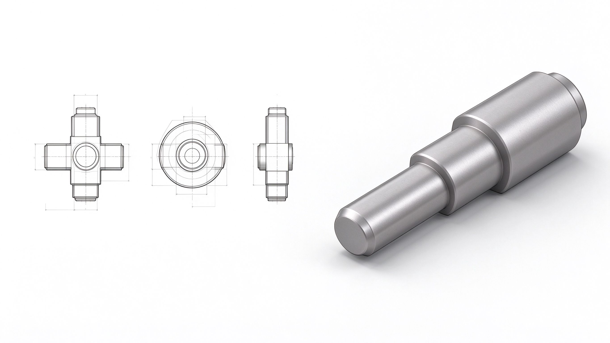

E2 旋转特征：一根中心线，转出所有轴类零件
这一部分讲什么
机器人上到处是"转的东西"：舵机轴、云台轴、轮轴、销。它们都是回转体——绕一根轴线转出来的。SolidWorks 里做回转体用「旋转」命令：画出半剖面轮廓，绕中心线转 360°，就是完整零件。这一部分学旋转，并做出一根阶梯轴。

旋转命令三大铁律
旋转报错，99% 是这三条
- 必须画一条中心线作为旋转轴（草图标签 → 中心线，不是普通直线）
- 轮廓必须画在中心线的一侧
- 轮廓必须封闭（可以借助中心线本身作为封闭边）
旋转步骤
- 前视基准面 → 草图
- 画一条中心线（竖直，作为旋转轴）
- 在中心线一侧画出轴的半剖面轮廓（封闭）
- 退出草图 → 「特征」→ 「旋转凸台/基体」
- 确认旋转轴选的是中心线，角度 360° → 确定
为什么是"半剖面"？轴是回转体，任何过轴线的截面都是一样的。只要画出"半边"，转一圈就是整根轴。所有旋转零件都这么画。
实例：阶梯轴
做一根 Φ20 × 30mm + Φ15 × 20mm 的阶梯轴，一端带 M6 螺纹底孔。
- 前视基准面 → 草图
- 画竖直中心线（长约 60mm）
- 在右侧画半剖面：外轮廓从上到下——水平线 Φ20 段（宽 30）→ 竖直阶梯线 → 水平线 Φ15 段（宽 20）→ 回到轴线上 → 沿轴线闭合
- 退出草图 → 旋转 360° → 得到阶梯轴
- 选中轴端面 → 草图 → 画 Φ5.2 圆（M6 螺纹底孔）→ 拉伸切除 → 深度 15mm
- 特征树全部改名，保存
为什么底孔是 Φ5.2？M6 螺纹的底孔直径标准是 5mm（内螺纹底孔≈公称直径−螺距，M6 螺距 1，即 6−1=5；加工常用 5.0~5.2）。这类"标准孔尺寸"后面 D 阶段会系统学。
练习
练习：按上面的实例做阶梯轴，保存为 E2_阶梯轴_姓名.SLDPRT。
没有电脑的同学：用纸笔画出阶梯轴的"半剖面草图"（标注 Φ20/Φ15/30/20），拍照提交。
参考资料
官
官方旋转特征（Revolves）
旋转特征的完整指南：轮廓选择、旋转轴、角度、多轮廓旋转。
https://help.solidworks.com/2026/english/solidworks/sldworks/c_Revolves_Folder.htm
官
官方逐步教程：完成旋转基体
官方分步教程，跟着点一遍旋转命令全流程。
https://help.solidworks.com/2026/english/swtutorialonline/t_tut_pattern_completerevolvedbase.htm
视
视频阿奇教程 · 旋转凸台/基体章节
看阿奇怎么画中心线、怎么处理"轮廓在中心线一侧"，重点看旋转报错怎么解决。
https://www.bilibili.com/video/BV1iw411Z7HZ
作业
- 命名：E2_阶梯轴_姓名.SLDPRT
- 附等轴测截图，特征树可见（命名规范）
- 在微信群发阶段记录：截图 + 一句话说明
常见问题
- 没画中心线，用普通直线当轴：旋转命令不知道绕哪转。
- 轮廓跨在中心线两侧：报错"轮廓与中心线交叉"，把轮廓全挪到一侧。
- 轮廓没封闭：旋转报错，检查缺口。
- 旋转角度输错：完整回转体用 360°；只转 90° 是在做 1/4 圆环时才用。